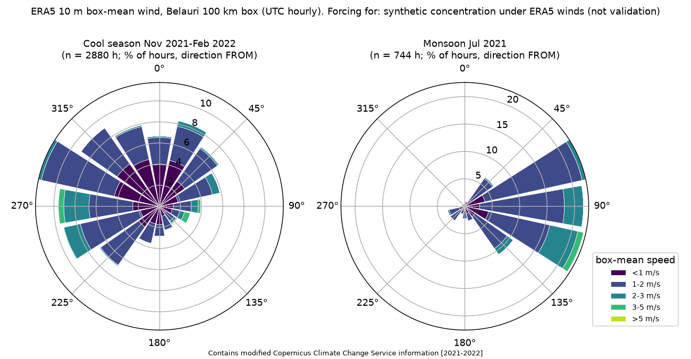
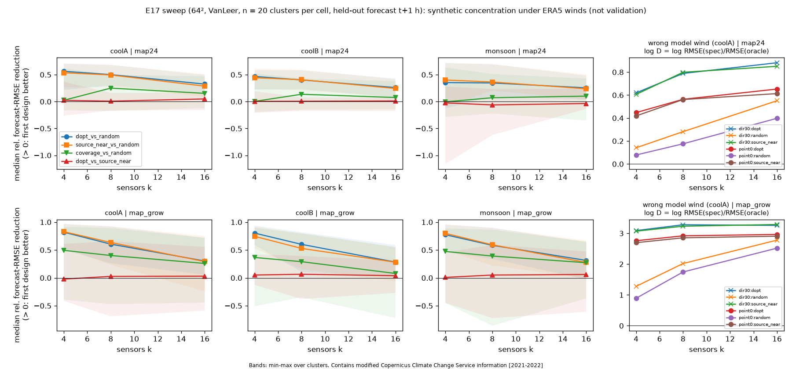

20 E17 Regional case: synthetic tracer under ERA5 winds
Synthetic concentration under ERA5 reanalysis winds. This is not validation: no real pollution data are used, and nothing here is evidence about ambient PM2.5 or exposure near Belauri.
Question (plan 3). Do the method comparisons from the synthetic study hold up under realistic wind sequences from a real place?
Evidence label. Exploratory. - 64² VanLeer run (cluster job 205400): 3 cases × 20 clusters. - 32² pilot: 6 clusters.
Not yet independently audited.
Evidence. - Design note docs/research/regional-case-design.md. - Feasibility audit docs/research/regional-feasibility.md. - Data manifest with sha256 hashes: docs/research/data/e17-manifest.json. - Code src/pravah/data/region.py and scripts/e17_regional.py. - Tables tables/e17-*; journal state/experiments/e17.md.
20.1 Setup
- Domain: a ~100 km box around Belauri, Kanchanpur (79.80–80.82 E, 28.34–29.24 N). Benchmark lengths are scaled ×10, with K = 500 m² s⁻¹.
- Wind: ERA5 hourly 10 m wind, averaged over the box. The solver takes a spatially uniform wind.
- Sources: synthetic, placed only where WorldPop population exists. That is Nepal only, so the Indian part of the box has no sources.
- Cases (date blocks):
- coolA (Nov–Dec 2021) and coolB (Jan–Feb 2022);
- monsoon: trained on November, tested on July 2021, a wind regime absent from training.
- Estimators and endpoint: the same as E07 and E08 (24 h window
map24, all past datamap_grow; held-out 1 h forecast RMSE). - Wrong-wind tests: the model gets either the ERA5 point nearest Belauri or the box mean veered by 30°.

The cool season is calm and has no dominant direction. Mean speed is 1.0–1.5 m s⁻¹, 27–50 % of hours are below 1 m s⁻¹, and there is a day–night swing. July has steady easterlies.
20.2 Results (64²)

| 1 h forecast RMSE, k = 8, median | D-optimal | near-source | random | persistence |
|---|---|---|---|---|
| 24 h window, true wind | 0.018–0.024 | 0.018–0.021 | 0.034–0.038 | 0.017–0.019 |
| all past data, true wind | 0.0014–0.0020 | 0.0016–0.0020 | 0.0035–0.0043 | 0.017–0.019 |
| nearest-point wind (coolA) | 0.034 / 0.032 | 0.034 / 0.032 | 0.045 / 0.033 | 0.017 |
| 30° veer (coolA) | 0.046 / 0.045 | 0.046 / 0.045 | 0.052 / 0.045 | 0.017 |
Wrong-wind rows show 24 h window / all past data.
- Placement still matters with the true wind. D-optimal and near-source beat random in every case (20 of 20 clusters at k = 8), by 35–50 % under the 24 h window and 53–64 % with all past data.
- The D-optimal vs near-source ordering mostly disappears.
- The two tie in the cool season.
- In the unseen monsoon regime, near-source edges ahead under the 24 h window (16 of 20). This is E07’s direction, much weaker.
- With all past data they tie. E07/E08’s clear D-optimal win does not appear under these calm, rotating winds.
- Only memory beats persistence. In calm winds, repeating the last reading is hard to beat. The 24 h-window forecasts only match it, while all-past-data forecasts beat it by about 10×.
- The wrong wind cancels both advantages. The ERA5 point nearest Belauri differs from the box mean by about 17° and 13 % in speed. Using it instead of the box mean makes every forecast about 2× worse than persistence. All strategies become nearly equal, and the memory gain disappears (all-past-data error rises 15–27×). This reproduces E12 under realistic winds.
20.3 Limits
- Uniform wind. The ERA5 wind varies inside the box by about as much as its mean, so a spatially varying wind is the main missing ingredient.
- No Indian sources or inflow. The boundary is clean.
- Mixing depth. The cool-season boundary layer (median 47–88 m) is much shallower than the model’s 500 m.
- Short calendar.
20.4 Data attribution
- Contains modified Copernicus Climate Change Service information [2021–2022]. Neither the European Commission nor ECMWF is responsible for any use that may be made of the Copernicus information or data it contains. ERA5: Hersbach et al. (2023), ERA5 hourly data on single levels from 1940 to present, C3S Climate Data Store, doi:10.24381/cds.adbb2d47 (CC-BY 4.0).
- Population: WorldPop (www.worldpop.org), Nepal 2020 UN-adjusted 1 km, CC BY 4.0.